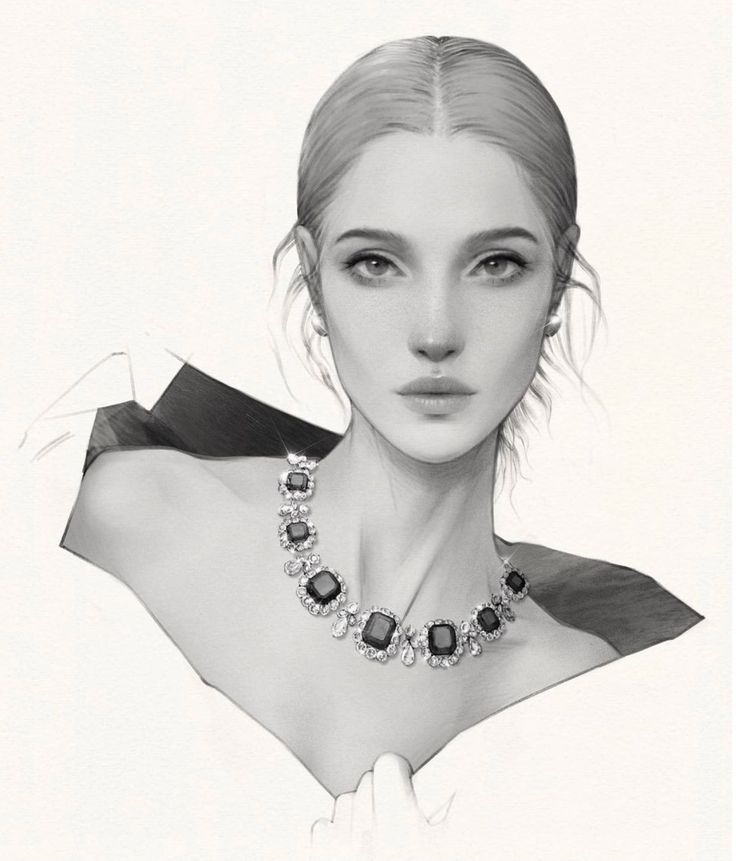

 정치적 관점 우리나라 도서관에 있는 책인데 인종은 백인으로 이루어졌었다. 또한 정형적으로 아름답다고 생각하는 그림체와 얼굴로 구성된다. 여자의 눈썹은 길고 남자의 얼굴은 조각같이 구성되었다.
나의 생각 작가가 외국인인 만큼 위의 인종을 백인으로 구성한 것은 어쩔 수 없다고 생각하지만 왜 평범한 연애 이야기를 다룬 책에서 전형적인 아름다운 외모를 사용하였는지에 대한 의문이 들었다.